首頁 / 成功案例
CASE STUDY 系統視覺客製
房子可以拆掉重蓋，家不行。
我們也做都更：不拆、不搬，不用等十年。
家族都更共識平台・視覺改版。一個五口之家用來追進度、全家表決、收存文件的平台：功能一個不拆、資料一筆不搬、連結不換，換上全家一眼看懂的樣子。
客戶的狀況
一棟老房子，五個人要一起決定很多年
媽媽是所有權人，四位子女要一起做決定。老家碰上合建都更，家人自己做了一套共識平台：追 15 個都更步驟、全家表決、記錄日誌、收存建方給的文件。功能完整，也一直在用。這次要的是：既然要陪全家走很多年，能不能更好找、更好懂、更有感？
- 時間長
動輒好幾年，有的要十年
從整合到交屋，中間會換好幾個階段，每一步都要有人記得。
- 金額高、文件多
一份比一份重要
契約、同意書、謄本、試算，要找得到、看得懂。
- 很多人一起決定
誰說過什麼都要留下來
每次表態都記下時間，改票也看得到，不用靠記憶。
改版前後
拖拖看：同一套系統，換上新的樣子
左右拖曳中間的滑桿比較。畫面中的姓名、建案與數字皆為示範資料
左側導覽，隨時看到目前階段與待決件數；15 個步驟變成一格一格的儀表，走到哪一格一眼就知道。大類、狀態兩個選單一選就篩好。
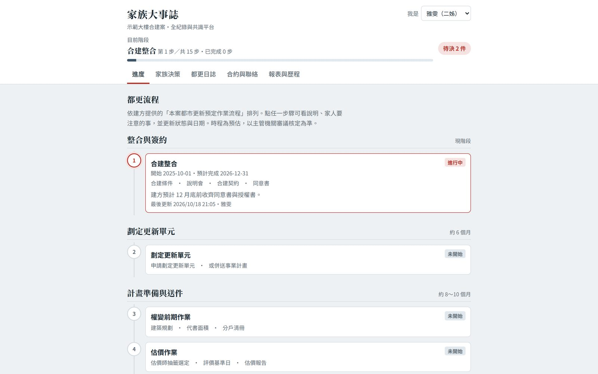
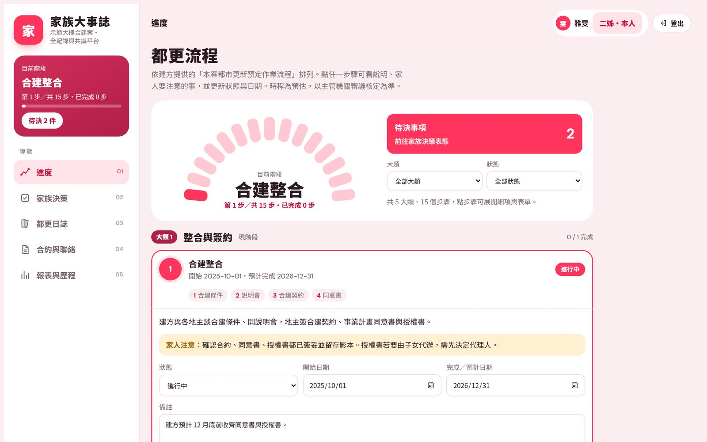
原本密碼框塞在頁首；改成獨立的登入頁，左邊是會發光的鑰匙孔與目前概況，右邊選身分、輸入密碼。
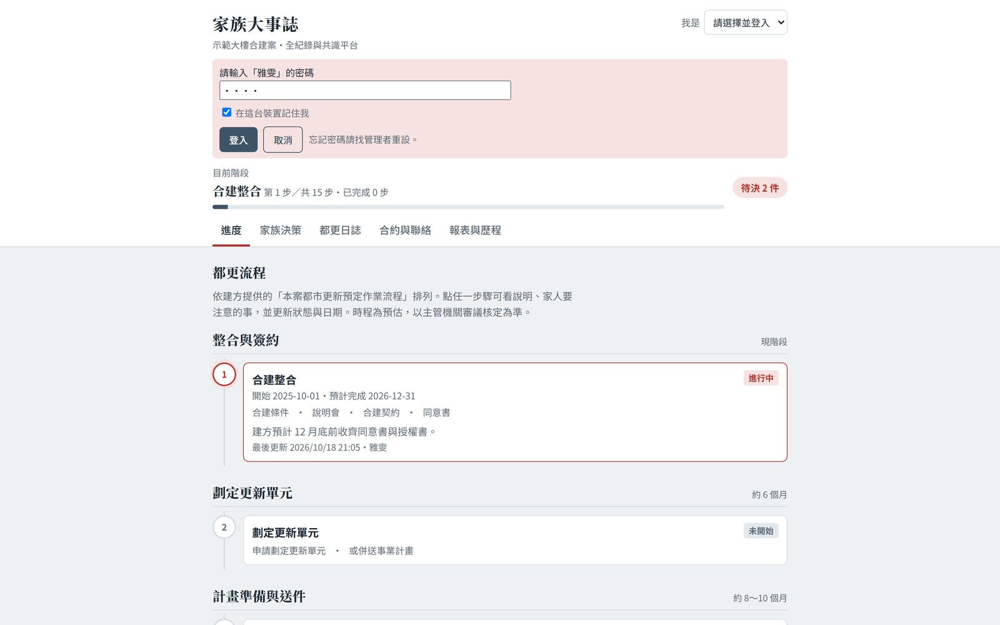
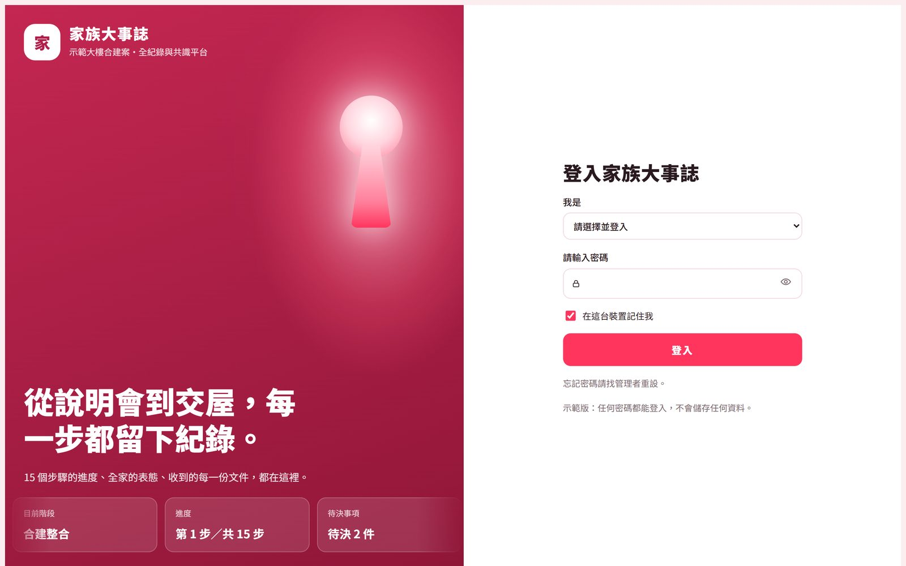
原本文件跟日誌混在一條長清單裡；改成一本一本的書，可以左右滑動。選一個類別，同類的書立刻跳出來；點一本就抽出來預覽、下載。
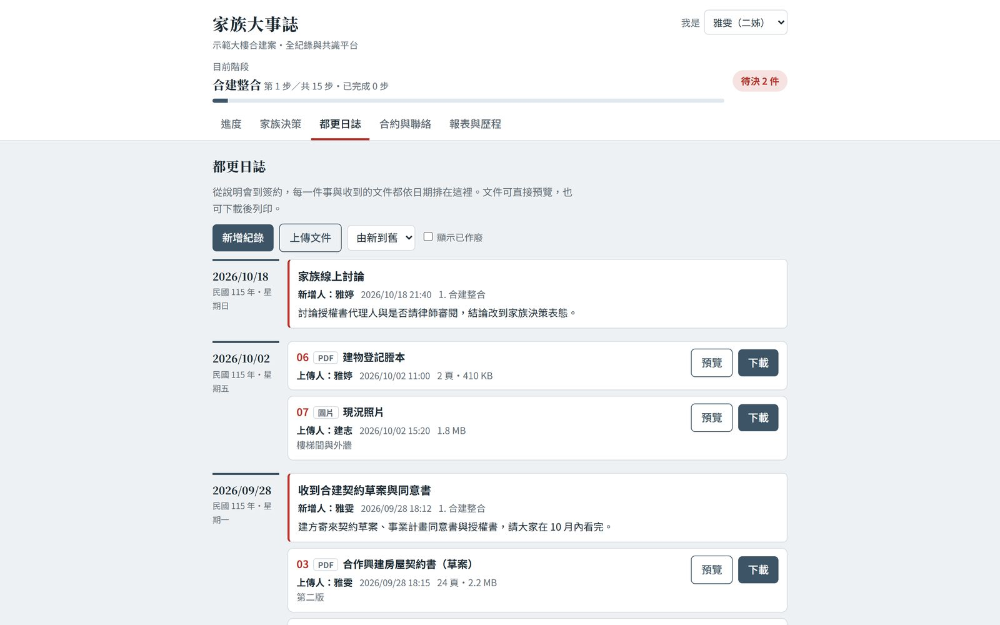
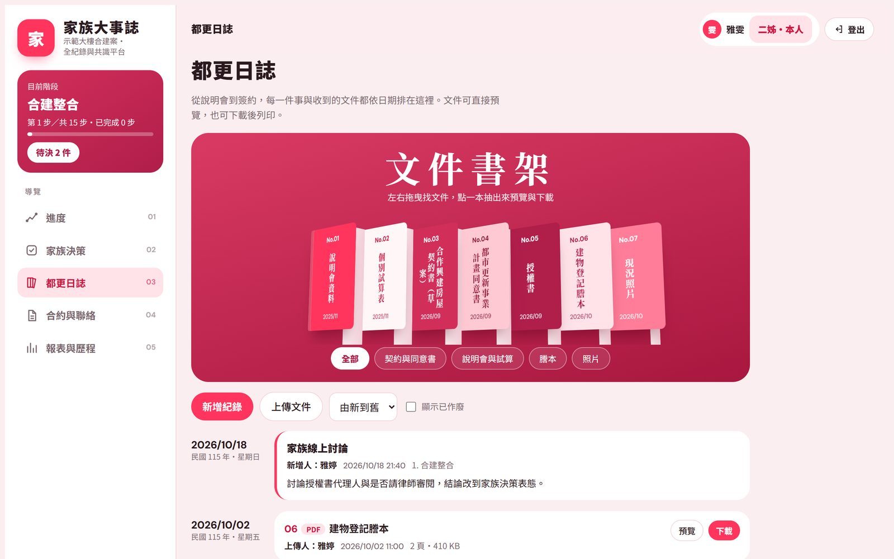
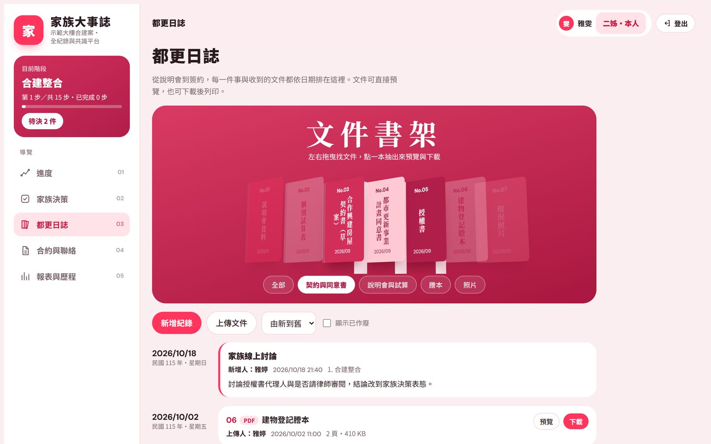
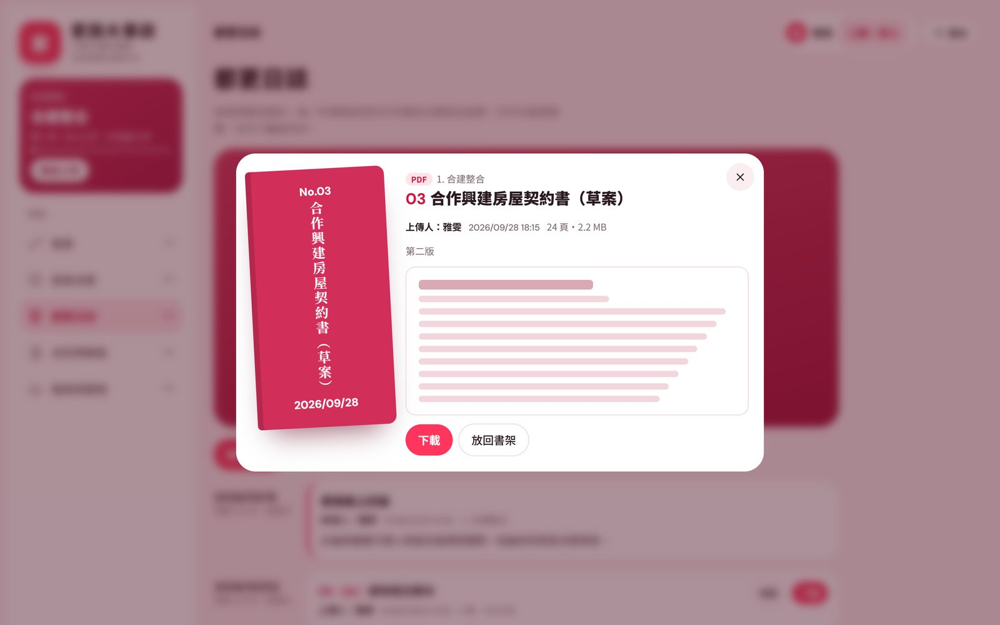
從一排文字框，變成一張家族圓桌：媽媽坐主位，四位子女圍著坐；誰表態了，印章就蓋在誰的座位上，中央的進度環即時算出幾人同意。「分享到 LINE」放在最顯眼的右上角，一鍵傳到家族群組。
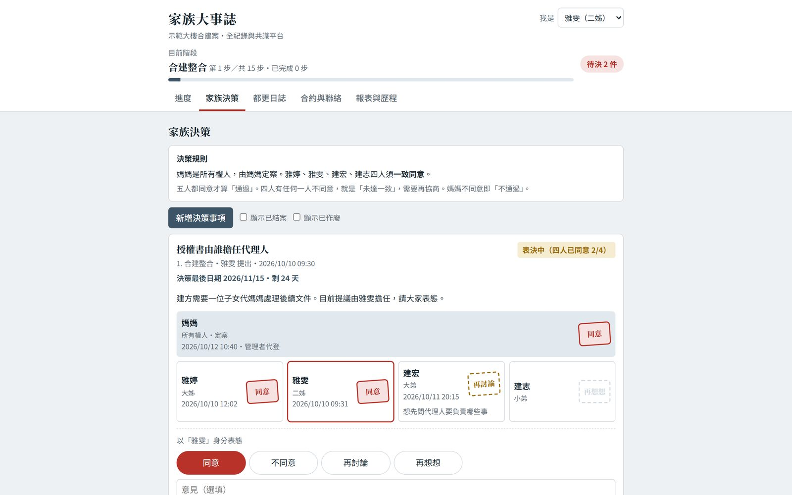
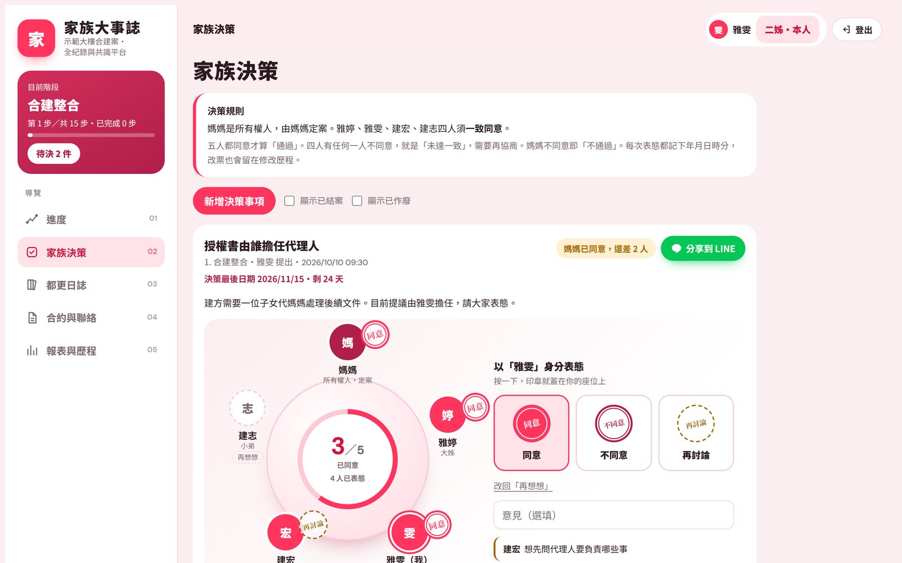
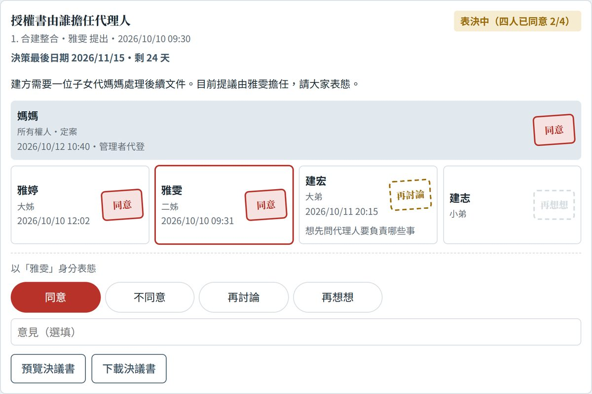
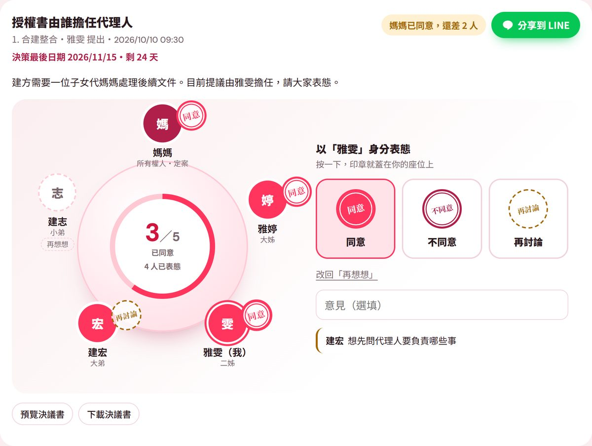
右上角清楚標出現在是誰：管理者、所有權人，還是家人本人；切換身分有選單，登出是獨立一顆。手機版把導覽收進「☰」。
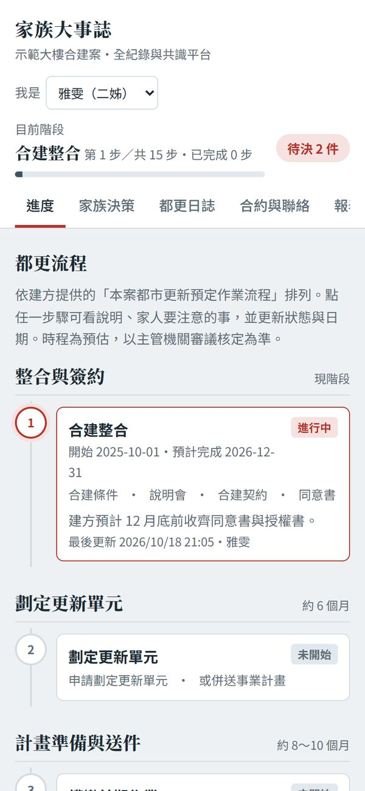
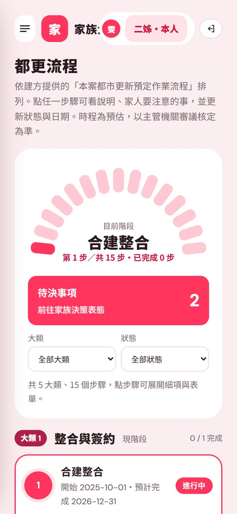
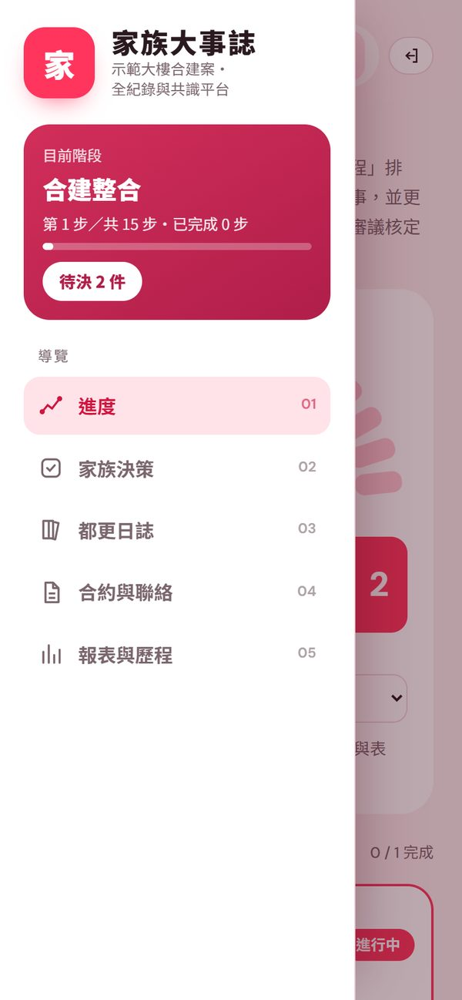
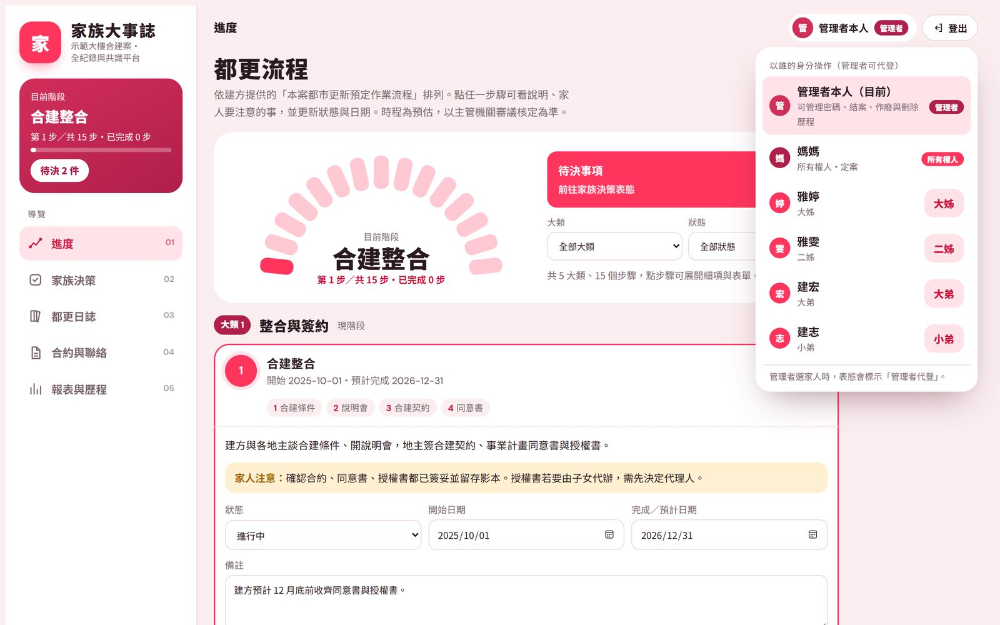
全部改了什麼
九個地方，從好用到好看又好懂
怎麼做到的
只換外觀與動線，其他一律不動
- 功能不拆：表決規則、密碼、報表、決議書，全部照原本的邏輯
- 資料不搬：家人的表態、日誌、文件都留在原處，連結也不用換
- 可以退回：換之前先備份，附上一步一步的換新步驟與退回方法
結果：家族確認採用新視覺。
適合誰
手上有一套好系統，想讓它被看見、被用起來
- 正在走都更、合建、繼承的家族：很多人要一起決定，而且一決定就是很多年
- 服務這類家族的會計師、律師、地政士、家族辦公室：想給客戶一個有質感、能留下紀錄的協作平台
- 公會、協會、學會：已經有會員系統或內部系統，想升級介面、又不想重做
FireBirdUSP 延伸自速傑企業股份有限公司，背後是 1986 年起累積的 40 年系統整合經驗。所以我們看得懂系統，也知道怎麼讓它被看見、被記得、被選擇。
本案例經客戶同意以不具名方式分享；畫面中的姓名、建案、金額與面積皆為示範資料，不是客戶的真實資料。